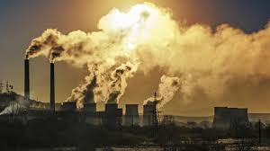

What IS Globalism?
Globalism is the ideology that all countries around the world should become more interconnected and dependent on each other. But what does this actually mean? In short: those who believe in the ideology think that the world would benefit from all countries relying on each other in some form or another whether that be through imports and exports, services, or protection. Globalisation takes many different forms as aforementioned with one of the most popular forms of globalisation is economic globalisation; it most often takes the form of increased trade dependencies between countries. Globalism has taken place throughout the entirety of human history with historical examples of it being Christopher Columbus discovering America, the silk and spice roads, etc. It has been more prominent in recent history with the industrial revolution playing a major role in the growth of globalisation.
How does Globalism Affect our Lives?
Globalisation has radically changed society throughout the course of recent history for both the better and the worse. The world as we know it would not exist without globalism. Without globalisation we would not have amenities like our clothing, cell phones, even the vehicles we drive would be drastically different. Many of the products we use on a daily basis would not be available to us as readily as they are today. World wide delivery used by businesses such as amazon is a direct result of globalisation and is only possible due to global interconnectedness. Furthermore, certain products would likely be more expensive than they are now such as clothing because the business models of companies like H&M would not be feasible. They would not be able to produce products cheaply in countries such as China and ship them to the US in a cheap manner. The vast majority of products available for purchase would become locally produced causing an increase in countries' domestic production. The global economy would cease to exist and organisations such as the WTO and World Bank would cease to exist meaning poorer countries would not have support from other wealthier countries.  Despite all these benefits to our daily lives globalisation is not perfect and has led to an increase in transportation globally whether through personal use or other means, globalisation has led to a massive increase in greenhouse gas emissions leading to an increase in global warming along with an increase in air pollution. The industrialization resulting from globalisation is another major contributing factor to air pollution which further negatively impacts daily life.